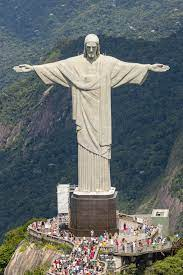
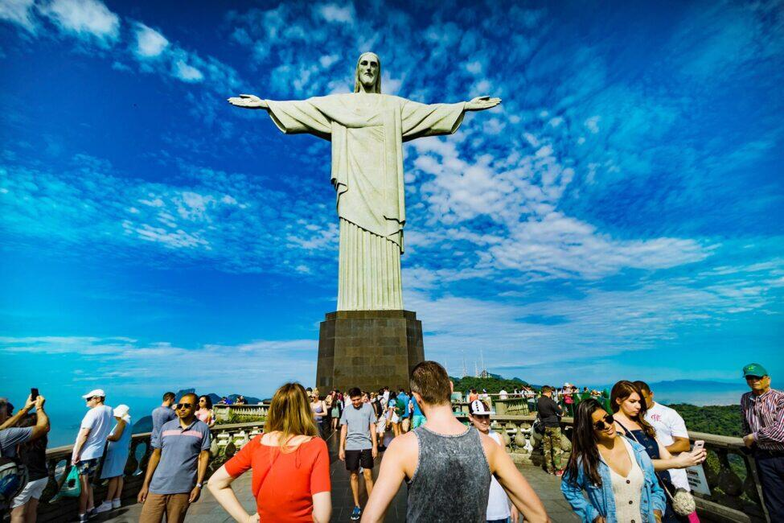

South America offers a wide range of tourist attractions and experiences, from awe-inspiring natural wonders to vibrant cultural heritage sites and thrilling adventure destinations. Whether you're seeking outdoor adventures, cultural immersion, or relaxation in stunning natural surroundings, South America has something to offer every type of traveler.
Christ the Redeemer:Located in Rio de Janeiro, Brazil, Christ the Redeemer is an iconic statue of Jesus Christ that stands atop the Corcovado Mountain, overlooking the city. This towering monument, standing at 98 feet tall, is a symbol of Brazilian Christianity and a UNESCO World Heritage Site. Visitors can take a train or van ride to the summit to admire panoramic views of Rio de Janeiro and the surrounding landscapes
Cusco and Machu Picchu:Cusco, located in the Peruvian Andes, was once the capital of the Inca Empire and is now a UNESCO World Heritage Site. This historic city is known for its well-preserved colonial architecture, Inca ruins, and vibrant cultural scene. From Cusco, visitors can embark on a journey to Machu Picchu, the ancient Inca citadel hidden amidst the Andean mountains. Machu Picchu is one of the most iconic archaeological sites in the world, known for its spectacular terraced fields, stone temples, and panoramic views of the surrounding valleys.
Iguazu Falls:Straddling the border between Argentina and Brazil, Iguazu Falls is one of the largest and most stunning waterfalls in the world. This natural wonder consists of a series of 275 individual cascades spread out over nearly two miles, surrounded by lush rainforest. Visitors can explore the falls from both the Brazilian and Argentine sides, taking boat rides, hiking trails, and enjoying breathtaking viewpoints.
Moai The Moai statues are iconic stone sculptures found on Easter Island (Rapa Nui), a remote island in the Pacific Ocean that is part of Chile. Carved by the indigenous Rapa Nui people between the 13th and 16th centuries, these enigmatic statues are known for their large heads, stoic expressions, and mysterious origins. Visitors to Easter Island can explore the archaeological sites where the Moai are located, learning about the island's fascinating history and cultural heritage.
Moai statues:My fascination with the Moai statues on Easter Island, also known as Rapa Nui, stemmed from a deep-seated curiosity about ancient civilizations and their enigmatic legacies. The Moai, with their stoic expressions and imposing presence, represented a profound mystery waiting to be unraveled. Here's why I yearned to visit this captivating destination and what I hoped to see and experience:
Beyond the Moai themselves, Easter Island is renowned for its stunning natural beauty. From rugged coastlines and pristine beaches to lush volcanic landscapes, the island offers a feast for the senses. I yearned to explore its hidden corners, hike along scenic trails, and soak in the awe-inspiring vistas that awaited me at every turn.
Iguazu Falls One of the main reasons I wanted to visit Iguazu Falls was to witness the breathtaking spectacle of Devil's Throat, the largest and most mesmerizing waterfall in the complex. I had read about the U-shaped chasm where the majority of the Iguazu River's water plunges down into the abyss, and I was eager to walk along the elevated walkways and get as close as possible to this natural wonder. Feeling the mist on my skin and hearing the thunderous roar of the water as it cascades down would be an experience unlike any other.
Additionally, I was excited to explore both the Upper and Lower Circuits of the falls to appreciate the different perspectives they offer. From the Upper Circuit, I hoped to take in panoramic views of the entire waterfall complex, marveling at the vastness and beauty of the cascades from above. On the Lower Circuit, I looked forward to getting closer to the base of the falls, feeling the spray of the water and witnessing the sheer power of nature up close.
 Christ the Redeemer Christ the Redeemer Christ the Redeemer
Christ the Redeemer: For many visitors, witnessing the sunset from the vantage point of Christ the Redeemer is a truly magical experience. As the golden hues of dusk cast a warm glow over Rio de Janeiro, the city below transforms into a picturesque panorama. I imagined soaking in the serenity of this moment, surrounded by the beauty of nature and the city's twinkling lights.
Rio de Janeiro is a city pulsating with vibrant culture, music, and rhythm, and I longed to immerse myself in its vibrant energy. From the bustling streets of Copacabana and Ipanema to the rhythms of samba and bossa nova, Rio offered a sensory feast for the soul. I hoped to explore its diverse neighborhoods, sample its delicious cuisine, and dance to the beat of its infectious music.
For many visitors, witnessing the sunset from the vantage point of Christ the Redeemer is a truly magical experience. As the golden hues of dusk cast a warm glow over Rio de Janeiro, the city below transforms into a picturesque panorama. I imagined soaking in the serenity of this moment, surrounded by the beauty of nature and the city's twinkling lights.
Cusco and the majestic ruins of Machu Picchu in Peru. Cusco, once the capital of the Inca Empire, beckons with its rich history and cultural heritage. The city's cobblestone streets, colonial architecture, and Inca ruins offer a glimpse into its storied past. I yearned to wander through its ancient streets, imagining the vibrant civilization that thrived here centuries ago.
The journey to Machu Picchu promised to be as captivating as the destination itself. As I traversed rugged mountain terrain, passing through lush valleys and cloud forests, I anticipated being surrounded by breathtaking scenery at every turn. The Andean landscapes, with their snow-capped peaks and winding trails, offered a sense of adventure and exploration that stirred my soul.